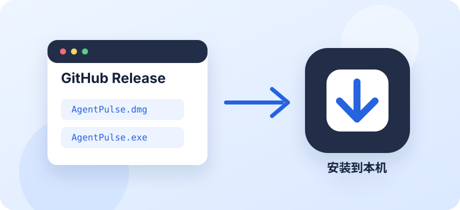
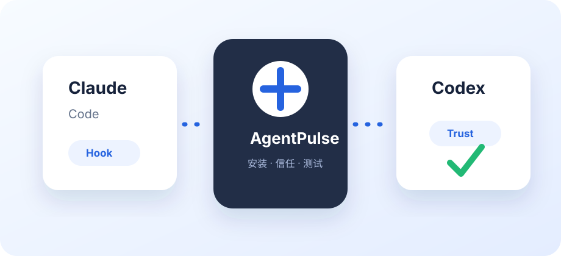
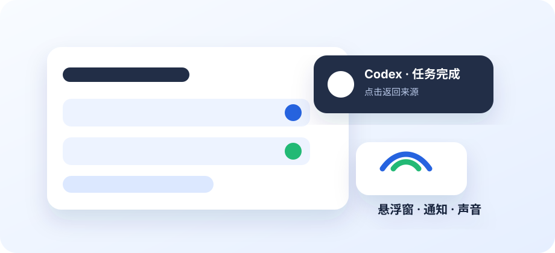
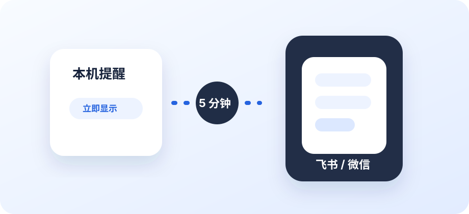

GET STARTED
让第一条提醒，
顺利到达。
选择 macOS 或 Windows，按照下面的步骤开始。
01
安装 App

macOS 与 Windows 都提供安装包。
macOS · 下载安装
适用于 Apple Silicon（M 系列）Mac，macOS 13 或更新版本。当前版本：v0.1.1。
- 从 macOS Release 下载
AgentPulse_0.1.1_aarch64.dmg。 - 打开 DMG，把 AgentPulse.app 拖到 Applications 文件夹。
- 从「应用程序」打开 AgentPulse。先放到固定位置，再接入工具。
当前版本使用 ad-hoc 签名，尚未经过 Apple 公证。若 macOS 拦截打开，请先确认下载来自本项目的 Release，再到「系统设置 → 隐私与安全性」查看并选择「仍要打开」。查看 Apple 的说明 ↗
Windows · 下载安装
适用于 Windows x64。从 Windows Release 下载 AgentPulse_0.1.1_x64-setup.exe 并运行安装程序。Release workflow 默认生成 EXE；如果发布时勾选 include_msi，也会附带 MSI 安装包。
Windows 已接入主面板、托盘、悬浮窗、系统通知和 Hook。安装后打开 AgentPulse，再到工具接入中配置 Claude Code / Codex。
当前 Windows 安装包尚未配置代码签名。若 Windows Defender SmartScreen 提醒未知发布者，请确认文件来自本项目 Release 后再继续。
需要自己修改或调试时，可以从 GitHub 源码 构建；普通安装直接下载 Release 安装包即可。
Windows 安装包由 GitHub Actions 构建并做静默安装验证。来源 App 跳转、前台检测和提示音播放尚未实现；切回来源 App 不会自动清理提醒或取消远程队列。悬浮窗约 5 秒收起，系统通知的停留由 Windows 管理。请先测试屏幕提醒，再用真实 Agent 任务验证接入。
02
接入 Claude Code / Codex

- 打开 设置 → 工具接入，找到使用中的工具并点击接入。
- 使用 Codex 时，核对接入弹窗中的 AgentPulse 命令与事件，再确认信任。取消信任后，Hook 不会执行。
- 重新启动 Claude Code / Codex 并新开会话，使工具加载新的 Hook 配置。
接入前会备份工具配置，只修改 AgentPulse 自己的 Hook。批准任务权限仍在来源工具中完成。
03
选好提醒方式，做一次测试

在首页选择 Claude Code 或 Codex，再编辑或添加提醒方式。两个工具分别保存自己的配置。
| 方式 | 适合什么情况 |
|---|---|
| 强制悬浮窗 | 希望提醒显示在屏幕右上角，不经过通知中心。 |
| 系统通知 | 使用 macOS / Windows 通知中心；需允许系统通知，受系统免打扰设置控制。 |
| 两者都发 | 同时显示悬浮窗与系统通知。 |
| 提示音 · macOS | 按「请求权限」「任务完成」分别选择音效和音量。 |
点击卡片上的测试，确认能够收到提醒；然后在新的 Agent 会话里完成一个真实任务，再查看「提醒记录」。
悬浮窗显示后约 5 秒自动收起。macOS 系统通知也会自动清理；点击通知会返回来源 App，若 AgentPulse 是被通知唤起，会保持后台，不自动打开主面板或 Dock 图标。Windows 的功能范围见上方说明。
04
离开电脑，也能收到消息

飞书群机器人
添加飞书提醒卡片，填写群机器人的 Webhook 地址；机器人启用了签名校验时，再填写签名密钥。
微信测试号
填写 appID、appsecret、openid 和模板 ID。消息模板应包含下面三个字段：
{{title.DATA}}
{{body.DATA}}
{{time.DATA}}延迟发送
飞书和微信可以立即发送，也可以延迟 1、3、5、10、15 或 30 分钟。每张卡片独立设置。
例如微信设为延迟 5 分钟：等待期间，检测到相关会话继续活动，或在 macOS 上回到来源 App，就取消对应待发提醒；否则到期推送。队列约每分钟检查一次，因此发送和取消可能略有延后。
TROUBLESHOOTING
没有收到提醒？
Codex 已接入，任务结束仍然没有消息
- 在工具接入中「重新接入」，确认 AgentPulse Hook 已受信任。
- 完全重启 Codex，再创建新会话测试。已经运行中的任务可能仍使用旧配置或旧信任状态。
- 先用提醒卡片的「测试」检查渠道，再到「提醒记录」确认是否收到了真实 Hook 事件。
如果记录为空，重点检查接入；有记录但发送失败，按记录中的错误检查对应渠道。
系统通知没有显示或点击后打开了 AgentPulse
macOS：在「系统设置 → 通知 → AgentPulse」中允许通知，并检查专注模式。v0.1.1 之后，点击 AgentPulse 发出的通知应返回来源 App，并让 AgentPulse 保持后台；若仍打开主面板，请确认已覆盖安装新版 App，并重启 Codex / Claude Code 后新开会话。Windows：在「设置 → 系统 → 通知」中允许 AgentPulse 通知，并检查勿扰模式。也可切换到「强制悬浮窗」验证本机提醒。
为什么 Codex 权限请求没有每次都弹？
Codex 的权限 Hook 只启动状态观察；只有桌面 Codex 明确列出正在等待用户处理的审批请求时，AgentPulse 才提醒。内部自动审核和工具执行过程不会触发权限提醒，也不会因为等得久而补弹。当前此功能适配 macOS Codex 桌面版；Windows、纯 CLI / IDE 或接口不兼容时会跳过权限提醒，并写入 hook-errors.log。任务完成提醒仍使用原有 Hook。AgentPulse 不替你批准权限。
为什么微信或飞书没有立刻推送？
检查卡片是否设置了延迟，以及会话是否已经继续活动；macOS 还会检测是否回到来源 App。卡片测试会忽略延迟立即发送。
找不到原因，在哪里反馈？
查看「提醒记录」中的错误，以及「设置 → 数据目录」中的日志。向 GitHub Issues 提供系统版本、Agent 类型和复现步骤；分享日志前请去除消息正文、路径和密钥等私人信息。
YOU’RE IN CONTROL
退出与卸载提醒
macOS 退出 App：接入继续保留。有消息时，AgentPulse 只启动后台通知进程；点击通知只处理返回来源，不自动打开主界面和 Dock 图标。主动打开 App 或使用菜单栏入口才会恢复主界面。
Windows：关闭主窗口后可通过托盘回到 App。来源跳转、提示音和自动清理的支持范围见 Windows 说明。
不再接收新提醒：在「设置 → 通用 → 卸载提醒」中移除 AgentPulse 的 Hook，然后重启已打开的 Agent 会话。其他 Hook 与已保存的提醒设置会保留；已进入延迟队列的消息不受影响。
准备删除 App 时，请先卸载提醒，避免工具继续调用已经不存在的程序。
返回首页